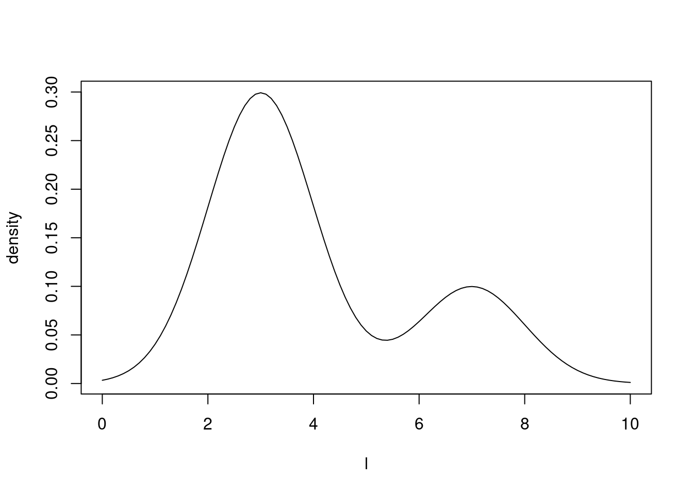
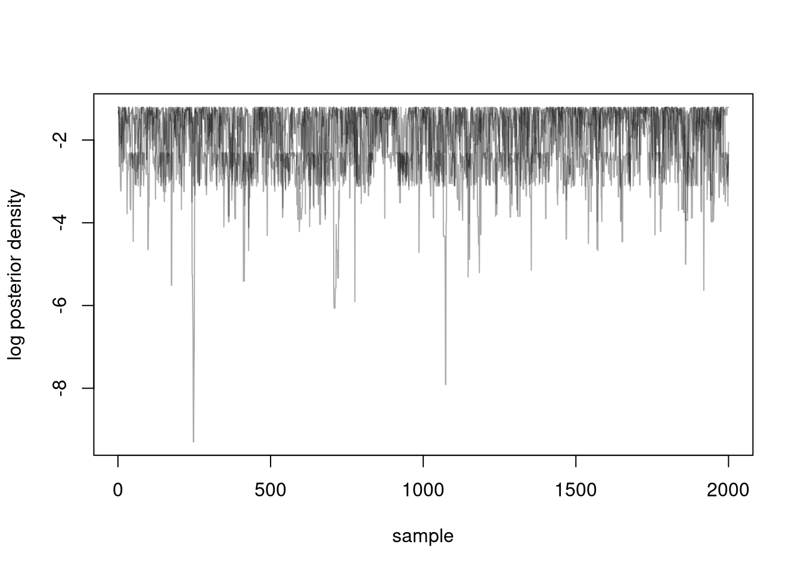
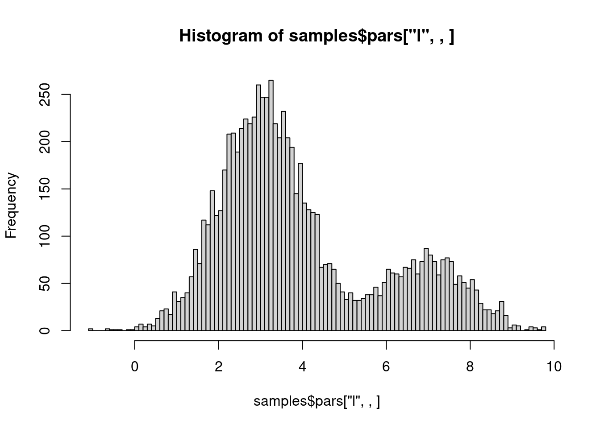

library(monty)10 Getting started with monty
Before showing how to fit odin models to data, we’ll focus for a bit on monty itself. If you are anxious to get on and fit the model from Section 7.4, you might skip ahead to Chapter 14, where we resume this.
The monty R package is designed for modular work with statistical distributions, leveraging Monte Carlo methods for sampling. It enables the construction of increasingly complex models through four approaches:
- Simple R code,
- A dedicated domain-specific language (DSL),
- Integration of
odinmodels, - Composition of two
montymodels.
The most basic method to define a monty model is through a simple R function, as shown in this chapter. More advanced examples are covered in the Chapter 11 in particular in the context of Bayesian statistics. Chapter 12 introduces the monty DSL for more versatile model building using a small probabilistic DSL similar to BUGs. The last part of this book starting from Chapter 14 demonstrates how to incorporate odin models into monty workflows.
10.1 A simple example
We can define a simple Gaussian mixture model of two sub-populations using the monty_model_function() from the package. The model represents the distribution of a quantity \(l\), sampled with a probability \(p\) from a normal distribution of mean \(m_{1}\) and with a probability \(1-p\) from another normal distribution of mean \(m_{2}\). Both subpopulations have variance equal to 1.
To build our monty model, we start by defining an R function returning the log-density of our statistical model. This function has four arguments \(l\) (the quantity of interest) and the three parameters \(p\), \(m_{1}\) and \(m_{2}\) defining the two Normally-distributed subpopulations.
fn <- function(l, p, m1, m2) {
log(p * dnorm(l, mean = m1) + (1 - p) * dnorm(l, mean = m2))
}Assuming that the population is 75% from subpopulation 1 (normally distributed with mean 3) and 25% from subpopulation 2 (also normally distributed but with mean 7), we can build our monty model by indicating that the parameters of the subpopulations are fixed at these given values.
mixture_model <- monty_model_function(fn,
fixed = list(p = 0.75, m1 = 3, m2 = 7),
allow_multiple_parameters = TRUE)We have just created a monty model.
mixture_model
#>
#> ── <monty_model> ───────────────────────────────────────────────────────────────
#> ℹ Model has 1 parameter: 'l'
#> ℹ This model:
#> • accepts multiple parameters
#> ℹ See `?monty_model()` for more informationWe can plot the density of our model for values of \(l\) between 0 and 10 and eye-check that we can see the two subpopulations in the correct proportions and with 3 and 7 as modes.
#l <- matrix(seq(from = 0, to = 10, by = 0.1), 1)
l <- seq(from = 0, to = 10, by = 0.1)
#monty_model_density(l_distribution, l)
plot(l,
exp(Vectorize(mixture_model$density)(l)),
type = "l",
ylab = "density")
10.2 Sampling from our example distribution
We now want to sample from this model, using the monty_sample() function. For this we need to tell monty which sampler we want to use to explore our distribution. There are a variety of samplers available and you can learn about them in Chapter 13. One of the simplest is the random walk Metropolis-Hastings algorithm that should work almost out of the box (though not necessarily efficiently) in most cases.
The random walk sampler uses a variance-covariance (VCV) matrix to guide its exploration, determining the ‘jump’ from the current point to the next in a random walk by drawing from a multivariate normal distribution parametrised by this matrix. For our single-parameter model here, we use a 1x1 matrix of variance 2 (matrix(2)) as our VCV matrix.
The choice of the VCV matrix is critical for the sampler’s efficiency, especially in more complex cases where the tuning of this matrix can significantly affect performance. A well-chosen VCV matrix optimises moving across the parameter space, making the random walk sampler more effective in exploring the distribution of interest.
sampler <- monty_sampler_random_walk(matrix(2))We are now ready to sample from our distribution using monty_sample() with 2000 samples, starting our MCMC chain at the value 3 and running 4 chains sequentially.
samples <- monty_sample(mixture_model, sampler, 2000, initial = 3, n_chains = 4)
#> ⡀⠀ Sampling [▁▁▁▁] ■ | 0% ETA: 25s
#> ✔ Sampled 8000 steps across 4 chains in 325ms
#> We can visualise our 4 chains.
matplot(samples$density, type = "l", lty = 1,
xlab = "sample", ylab = "log posterior density", col = "#00000055")
We can also check that our samples are correctly representing our distribution:
hist(samples$pars["l", , ], breaks = 100)
10.3 Connection of monty with other software
monty includes a simple probabilistic domain-specific language (DSL) that is inspired by languages of the BUGS family such as stan and Statistical Rethinking. It is designed to make some tasks a bit easier, particularly when defining priors for your model. We expect that this DSL is not sufficiently advanced to represent most interesting models but it may get more clever and flexible in the future. In particular we do not expect the DSL to be useful in writing likelihood functions for comparison to data; we expect that if your model is simple enough for this you would be better off using stan or some similarly flexible system.
*mention SSM, drjacoby, mcstate, BayesTools
10.4 Going further
We’ve discussed a little bit about the philosophy of monty and built a simple model using an R function with monty_function. The example introduces the basics of defining and sampling from a monty model.
For more advanced applications, refer to Chapter 12 for constructing models using monty’s domain-specific language, which enables greater flexibility for complex structures. Lastly, Chapter 14 illustrates how to incorporate odin models into monty workflows, expanding the package’s potential for Bayesian inference with more sophisticated, system-based models. Each section provides detailed examples to guide you in leveraging monty’s full capabilities.